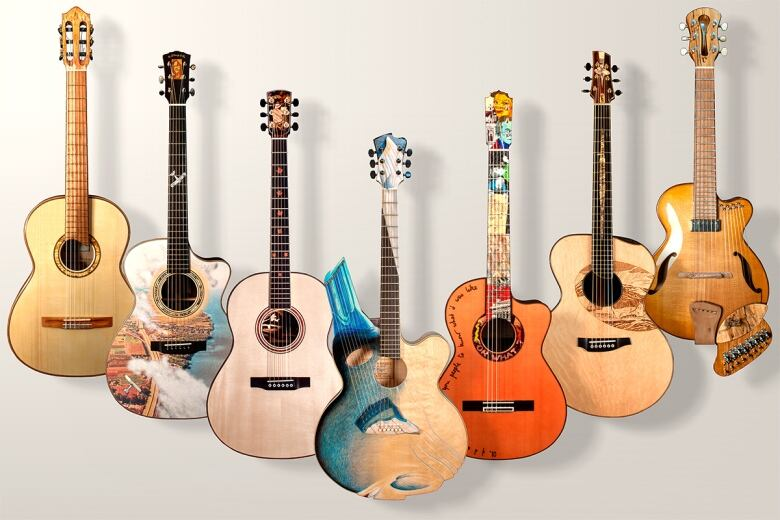
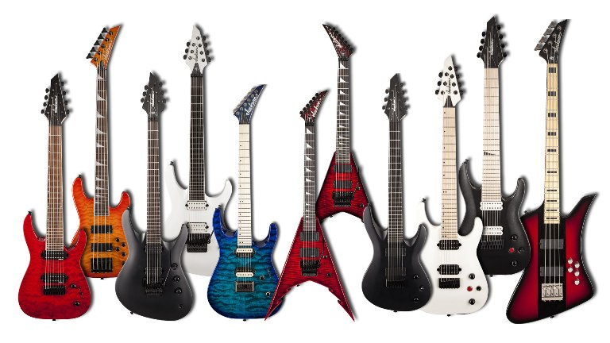

Виды гитар
Классические акустические гитары
Для классической гитары характерно наличие шести струн, а её диапазон – от ноты «ми» в малой октаве до ноты «до» в третьей октаве. Корпус широкий и полый, а гриф массивный.
Играют на такой гитаре классику, испанские мотивы, босса-нову и музыку других стилей.
Можно назвать следующие разновидности этого инструмента – они отличаются корпусом, звучанием, количеством струн:
- Дредноут. Такая гитара отличается узким грифом, малым расстоянием между струнами, увеличенной громкостью и мощным звуком. Она подходит для разных музыкальных стилей – акустического рока, блюза, кантри и т.д.
- Джамбо. Характерно насыщенное звучание аккордов, глубокие средние и басовые ноты. Применяется в акустическом и поп-роке, а также кантри .
- Фолк-гитара. Это более компактная версия гитары-дредноут. Предназначена в основном для музыки в стиле фолк, и считается хорошим вариантом для новичков.
- Трэвел-гитара. Звук у этой гитары не самый качественный, но благодаря небольшому лёгкому корпусу, её удобно брать в путешествия и походы.
- Аудиториум. Такой инструмент создан для игры в небольших и средних концертных залах и работы в оркестрах. Низкие и высокие ноты имеют слегка приглушённый звук.
- Укулеле. Это упрощённая маленькая четырехструнная гитара, особенно популярная на Гавайях.
- Баритон-гитара. Имеет увеличенную мензуру и звучит ниже обычной гитары.
- Тенор-гитара. Для неё характерно наличие четырёх струн, короткая мензура, диапазон около трёх октав (как у банджо).
- «Русская» семиструнная. Практически идентична шестиструнной, но имеет иной строй: ре-си-соль-ре-си-соль-ре. Широко применялась в русской и советской музыке.
- Двенадцатиструнная. Струны инструмента составляют шесть пар – их можно настраивать традиционным строем или в унисон. Звук этой гитары отличается большим объёмом, насыщенностью и эффектом эха. На двенадцатиструнке играют прежде всего барды и рок-музыканты.
- Электроакустическая гитара. От обычной акустики отличается наличием дополнительных возможностей – есть темброблок, эквалайзер и пьезозвукосниматель (превращает колебания акустического резонатора в электрический сигнал). Инструмент можно подключать к усилителю и использовать гитарные звуковые эффекты.
Таковы основные виды акустических гитар.
Полуакустические гитары
Полуакустическая гитара, как и электрическая, снабжена электромагнитным звукоснимателем и электроникой, но имеет полый внутри корпус (как на акустической гитаре), благодаря чему можно играть на ней без усилителя. Звук при этом более тихий, чем на акустической гитаре. Существуют такие типы полуакустических гитар, как арктоп, джазовая и блюзовая. Подходит подобный инструмент для таких жанров, как блюз, рок-н-ролл, джаз, рокабилли и т.д.
Электрогитары
Звук на таких гитарах извлекается за счёт электромагнитных звукоснимателей, которые превращают колебания струн (они изготавливаются из металла) в колебания электрического тока. Этот сигнал необходимо озвучивать акустической системой, соответственно, играть на этом инструменте можно только с усилителем. Дополнительные функции – регулировка тембра звука и громкости. Корпус электрогитары, как правило, тонкий и с минимальным количеством пустого пространства.
Большинство электрогитар имеют шесть струн и строй, аналогичный акустической гитаре – (E, A, D, G, B, E – ми, ля, ре, соль, си, ми). Встречаются семиструнные и восьмиструнные варианты с добавленными струнами «си» и «фа-диез». Восьмиструнки особенно популярны среди метал-групп.
Наиболее известные виды электрогитар, которые считаются своего рода эталоном – Stratocaster, Tekecaster и Les Paul.
Формы электрогитар бывают самыми разными – это зависит от марки, модели и замысла авторов. К примеру, гитара Gibson Explorer по очертаниям похожа на звезду, а Gibson Flying V (гитара Джимми Хендрикса) – на летящую стрелу.
Применяется такой инструмент во всех разновидностях рока, металле, блюзе, джазе и академической музыке.
Бас-гитары
Бас гитары обычно имеют четыре струны (они металлические и имеют повышенную толщину), отличаются удлинённым грифом и своеобразным тембром – низким и глубоким. Такая гитара предназначена, чтобы играть басовые партии и добавлять насыщенности музыкальным произведениям. Применяется в джазовой и поп- музыке, а также в роке. В основном используются электрические бас-гитары, реже – акустические. Диапазон такой гитары – от ноты «ми» в контроктаве до ноты «соль» в первой октаве.
Необычные разновидности
Можно назвать такие уникальные типы гитар, как:
Резонаторная гитара
Отличается от классической гитары наличием резонатора – колебания струн передаются на специальный конус-диффузор из алюминия. Такой инструмент имеет повышенную громкость и уникальный тембр.
Арф-гитара
Здесь сочетаются два инструмента – арфа и гитара. Так, к обычному гитарному грифу добавляются струны арфы, за счёт чего звук становится необычным и оригинальным.
Стик Чапмена
Эта разновидность гитары представляет собой широкий и удлинённый гриф. Как и электрогитара, стик Чапмена снабжён звукоснимателями. Подходит для игры двумя руками – можно играть мелодию, аккорды и басовую партию одновременно.
Doubleneck
Такая электрогитара имеет два грифа, каждый из которых играет свою роль. К примеру, в одном инструменте могут сочетаться шестиструнная гитара и бас-гитара. Одна из самых известных моделей – Gibson EDS-1275
Лучшие бюджетные электрогитары
Тем, кого интересуют лучшие бюджетные электрогитары, стоит присмотреться к нескольким моделям из ассортимента музыкального магазина «Ученик»:
ZOMBIE V-165 VBL
- 6 струн;
- материал: липа, палисандр, клён;
- 2 хамбакера;
- в комплекте: комбоусилитель, чехол, электронный тюнер, запасной комплект струн, медиаторы и ремень;
Aria STG-MINI 3TS
- 6 струн;
- компактный корпус stratocaster;
- материал: ель, вишня, бук, клён, палисандр;
- страна изготовления: Чехия;
G Series Cort G100-OPBC
- 6 струн;
- классический дизайн;
- материал: палисандр, клён;
- радиус грифа: 305 мм.;
- 22 лада;
- звукосниматели: S-S-S Powersound;
Clevan CP-10-RD
- 6 струн;
- дизайн: корпус в стиле гитар Les Paul;
- материал: палисандр, древесина твёрдых пород;
- мензура: 648 мм.;
- звукосниматели: 2 HB;
Лучшие бюджетные акустические гитары
Самый подходящий вариант для начинающих – недорогая акустическая гитара.
Обратите внимание на следующие модели из ассортимента музыкального магазина «Ученик»:
Гитара Ижевский завод Т.И.М2КР
- классический корпус;
- 6 струн;
- мензура 650 мм;
- материал корпуса: ель;
Гитара 38” Naranda CAG110BS
- форма корпуса: дредноут;
- 6 металлических струн слабого натяжения;
- мензура 624 мм;
- 21 лад;
- материалы: клён, липа;
- отличная модель для начинающих;
Гитара Foix FFG-1040SB санбернст с вырезом
- вид корпуса: джамбо с вырезом;
- 6 струн;
- мензура 650;
- материалы: липа, композитный древесный материал;
Гитара Амистар M-61, дредноут, матовая
- тип корпуса: дредноут;
- 6 струн;
- мензура 650 мм;
- матовая отделка корпуса;
- материал корпуса: берёза;
- 21 лад;
Различия между гитарами
Основные виды гитар имеют следующие различия:
Струны:
- струны классической гитары обычно изготовлены из нейлона, тогда как у электрогитары, бас-гитары – из металла;
Усиление звука:
- в классической гитаре в роли акустического резонатора, усиливающего звук, используется сам корпус инструмента, полый внутри, а в электрической эту функцию выполняют электромагнитный звукосниматель и усилитель;
- в полуакустической гитаре электромагнитный звукосниматель снимает колебания звука со струн, а пьезозвукосниматель в электроакустической гитаре – колебания с корпуса;
Диапазон:
- если традиционная и электрическая гитара имеют диапазон порядка четырёх октав, то бас-гитара – ниже на одну октаву;
- баритон-гитара – промежуточная ступень между классической и бас-гитарой;
- восьмиструнной гитаре не хватает только одной ноты до самого низкого тона бас-гитары.
- наименьший диапазон у тенор-гитары (примерно три октавы).
Корпус:
- при меньшем количестве струн бас-гитара, в отличие от других видов инструмента, имеет удлинённый гриф и более продолговатый корпус;
- традиционная акустическая гитара отличается широким корпусом и крупным грифом;
- электрогитара имеет меньшую толщину, чем её акустические и полуакустические «собратья».
Частые вопросы
Легко ли освоить электрогитару тем, кто раньше играл на акустической?
Поскольку струны, лады и строй электрогитары фактически идентичны классическим гитарам, обучение не составит особого труда. Прежде всего, необходимо научиться играть с усилителем.
На какие марки гитар стоит обратить внимание?
Лучшими производителями гитар считаются Yamaha, Fender, Martinez, Gibson, Crafter, Ibanez, Hohner и т.д. В любом случае, при выборе стоит исходить из ваших потребностей и бюджета.
Подведём итоги
Можно сделать вывод, что типы гитар весьма разнообразны, и каждый из них создан для определённых целей. Если вам нужен недорогой универсальный инструмент, стоит выбрать акустическую гитару. Для начинающих рок-музыкантов незаменимым помощником будет электрогитара. Тем, кто хочет использовать функционал электрического и акустического инструмента гитар, можно посоветовать электроакустическую или полуакустическую гитару. Наконец, искушенных в музыке и опытных гитаристов наверняка заинтересуют необычные виды гитар – с двумя грифами, арф-гитара и т.д.
Желаем вам удачи в выборе гитары!